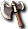

- 道具
 包包
包包- 其他
 升級
升級- 進階免費任務
- 附魔
- 任務
- 溫特安塔貢製作
- 魔王區
 寶石
寶石 電漿捲軸
電漿捲軸- 恢復
- 舊版本道具
- 媒介
- 守護動物
- 寶石
- 染色
- 移動
- 輔助
- 製藥
- 釣魚
- 商城道具
- 外觀彩券限定
- 套裝服
- 寵物
- 藥水
- 訊息
- 一般專用
- 一般染色
- 附魔
- 共通
 彩券
彩券- 捕獲
- 服裝
- 染色
- 染色後顏色表
- 武器
 氣象效果
氣象效果- 特殊
- 盾
- 神祕專用
- 調配
- 配送
- 頭部裝備
- 身體防具
- 共通其他
- 女其他
- 女修道士
- 女吟遊詩人
- 女戰士
- 女盜賊
- 女聖職者
- 女阿修羅
- 女預言者
- 女騎士
- 女魔術師
- 男其他
- 男修道士
- 男吟遊詩人
- 男戰士
- 男盜賊
- 男聖職者
- 男阿修羅
- 男預言者
- 男騎士
- 男魔術師
- 商店販售資訊
 櫻花村
櫻花村- 交流廣場
- 阿尼姆斯
- 伊卡洛斯
- 艾德安德
- 卡雷瓦拉
- 科斯莫佛利亞廣場
- 魔界村
- 斯歐米
- 邁索西亞圖書館
- 邁索西亞市場
- 米魯里斯
- 盧亞斯
- 魯克西翁
- 萊貝雅
- 海賊要塞
- 付費行動商店
- 武器
- 邊緣・奎雷克
- 邊緣・奎雷克(地下)
- 魔珠
- 寶珠(地下)
- 吉他
- 鼓
- 拳套
- 拳套(地下)
 芒奇
芒奇- 豎琴
- 豎琴(地下)
- 雙手槍
- 劍
- 劍(地下)
- 劍卡
- 劍卡片(地下)

斧頭- 斧(地下)
- 法杖
- 法杖(地下)
- 槍
 槍(地下)
槍(地下)- 單手槍
 短劍
短劍- 短劍(地下)
 鞭子
鞭子- 魔法卡
- 魔法卡片(地下)
- 防具
- 耳環
- 王冠・后冠
 腰帶
腰帶- 項鍊
- 護符
- 魔杖
- 善惡帽子
 帽子
帽子- 帽子(其他)
 手套
手套- 戒指
- 戒指(地下)
- 盾
- 職業帽子
- 肩章
- 護脛
- 護脛(地下)
 手環
手環- 腳環
- 追加武器
 鞋子
鞋子- 龍帽子